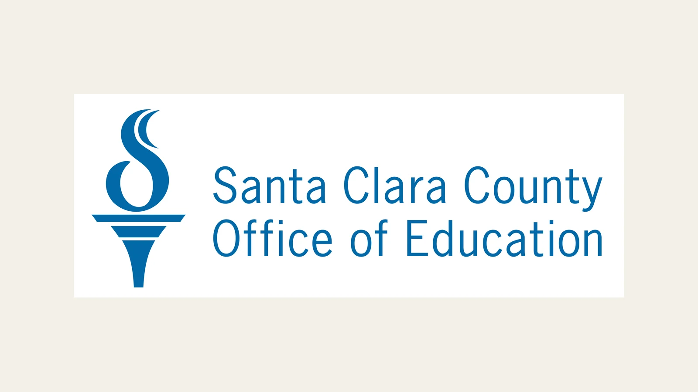

Expanding Climate Curriculum Through Santa Clara County Schools
IRISTEM is working with the Santa Clara County Office of Education to introduce student-friendly climate and STEM materials to more local educators.

Sharing a student-led curriculum model
IRISTEM met with Jennifer Mutch from the Santa Clara County Office of Education’s Leadership and Innovation Division to explain how students are turning advanced climate research into materials for younger learners. The team shared five lesson concepts, examples of how university research can be translated for a classroom, and an interactive activity built around climate policy.
The discussion focused on practical use. IRISTEM showed how each idea could move from a technical source into a clear question, age-appropriate explanation, and activity that asks students to make observations or evaluate evidence. That structure keeps the research visible while giving teachers a manageable starting point.
Creating pathways to local educators
SCCOE offered opportunities for IRISTEM to present its work to educators and helped the team explore how the materials could reach schools across Santa Clara County. Those connections matter because even a well-designed resource needs educator review and a realistic route into classrooms.
IRISTEM’s contribution is the curriculum-development work itself: selecting research and policy topics, identifying what younger students need to understand first, and designing lessons and activities that preserve the central scientific ideas. SCCOE’s role is helping IRISTEM understand educator needs and consider where those resources may be useful. The work is ongoing, and no single meeting guarantees adoption by a school or district.
Making climate research easier to use
Climate education can require teachers to connect science, local impacts, policy, and community decisions within limited class time. IRISTEM’s lesson concepts are meant to reduce that preparation barrier without presenting complicated issues as simple ones. Student-friendly language, guided questions, visual models, and active learning give younger students several ways to enter the subject.
IRISTEM and SCCOE share a goal of making research-based climate education easier for teachers and younger students to use. By pairing student curriculum design with county-level educator connections, the collaboration can help strong scientific ideas travel farther while remaining clear about their sources and limits.